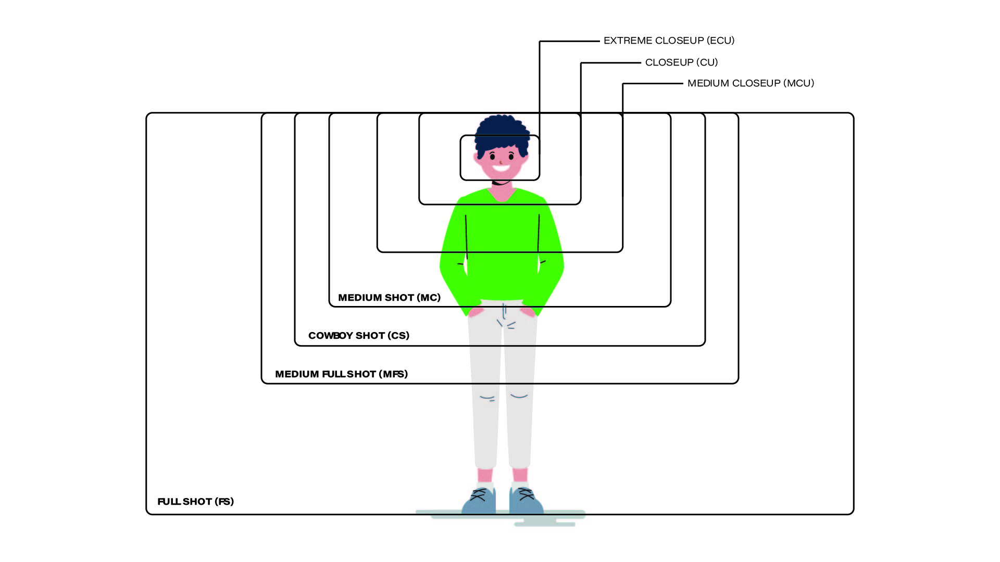

Download PDF
.اهلا, بتقدر تحمل ملف pdf لفتهم أكثر عن حجم اللقطات في صناعة الأفلام
Download This Photo
Watch The Video
فيديو يتكلم عن حجم اللقطات في السينما والتصوير ووكيف يتم استخدامها
شرح
حجم اللقطات في السينما واستخدام أنواع العدسات المختلفة
تلعب أحجام اللقطات دورًا أساسيًا في السرد السينمائي، حيث تساهم في توجيه انتباه المشاهد، وإيصال المشاعر، وتعزيز فهم القصة. كما أن اختيار العدسات يؤثر بشكل كبير على كيفية إدراك المشاهد للمشهد. في هذا المقال، سنستعرض أنواع اللقطات السينمائية المختلفة، وتأثير العدسات المستخدمة في تصويرها، وكيفية توظيفها لخدمة السرد البصري.
أولًا: أنواع اللقطات حسب الحجم
اللّقطة القريبة جدًا (Extreme Close-Up - ECU)
تُستخدم لإبراز تفاصيل دقيقة مثل عين، يد، أو شفاه الشخصية.
تُساعد في إيصال مشاعر مكثفة أو إبراز عنصر مهم في المشهد.
تُستخدم غالبًا في المشاهد العاطفية أو التشويقية.
اللّقطة القريبة (Close-Up - CU)
تركز على وجه الشخصية، مما يُبرز تعابيرها وانفعالاتها.
تُستخدم عندما يكون من المهم أن يفهم المشاهد مشاعر الشخصية.
عدسة شائعة: 50mm أو 85mm بفتحة عدسة واسعة (f/1.8 أو f/2.8) لعزل الشخصية عن الخلفية.
اللّقطة المتوسطة القريبة (Medium Close-Up - MCU)
تُظهر الشخصية من الصدر إلى أعلى.
تُستخدم لمزج بين إبراز تعابير الوجه وبعض لغة الجسد.
عدسة شائعة: 50mm أو 85mm مع فتحة عدسة ضيقة نسبيًا للحفاظ على وضوح أكبر للخلفية.
اللّقطة المتوسطة (Medium Shot - MS)
تُظهر الشخصية من الخصر إلى أعلى، مما يُتيح رؤية أوضح لحركات الجسد.
تُستخدم عادة في الحوارات ومشاهد التفاعل بين الشخصيات.
عدسة شائعة: 35mm أو 50mm بفتحة متوسطة (f/2.8 – f/5.6).
اللّقطة المتوسطة البعيدة (Medium Long Shot - MLS)
تُظهر الشخصية من الركبتين إلى أعلى، وتُعرف أيضًا بـ "لقطة الثلاثة أرباع".
تُستخدم لإظهار الشخصية مع جزء من البيئة المحيطة بها.
عدسة شائعة: 35mm أو 50mm مع فتحة متوسطة للحفاظ على وضوح التفاصيل.
اللّقطة البعيدة (Long Shot - LS)
تُظهر الشخصية بالكامل داخل الإطار مع جزء كبير من الخلفية.
تُستخدم لتوضيح العلاقة بين الشخصية والبيئة المحيطة.
عدسة شائعة: 24mm أو 35mm لالتقاط أكبر قدر من التفاصيل.
اللّقطة البعيدة جدًا (Extreme Long Shot - ELS) / اللقطة الواسعة (Wide Shot - WS)
تُظهر الشخصية بحجم صغير داخل إطار واسع للبيئة.
تُستخدم في المشاهد التأسيسية Establishing Shots لإعطاء إحساس بالمكان أو العزلة.
عدسة شائعة: 14mm إلى 24mm لالتقاط مشهد أوسع.
اللّقطة العلوية (Overhead Shot)
تُلتقط من زاوية علوية شديدة، وكأن الكاميرا تنظر مباشرة للأسفل.
تُستخدم لإعطاء إحساس بالقوة أو الضعف، حسب السياق.
عدسة شائعة: 24mm أو 35mm بزاوية حادة جدًا للأسفل.
لقطة عين الطائر (Bird’s Eye View)
تُظهر المشهد من منظور علوي شديد الارتفاع، مثل تصوير المدن أو المعارك الكبيرة.
تُستخدم لإبراز الأنماط والتكوينات البصرية.
عدسة شائعة: 14mm أو 24mm بعدسات خاصة مثل الطائرات بدون طيار (Drones).
ثانيًا: دور العدسات في تحديد طبيعة اللقطة
العدسات العريضة (Wide-Angle Lenses - 14mm – 35mm)
تُستخدم لالتقاط مشاهد واسعة أو تضمين بيئة أكثر داخل الإطار.
تُضفي إحساسًا بالمساحة وتُستخدم عادةً في المشاهد التي تحتاج إلى عمق بصري واضح.
تُفضل في تصوير اللقطات البعيدة جدًا (ELS) والبعيدة (LS).
العدسات القياسية (Standard Lenses - 35mm – 85mm)
تُعطي صورة طبيعية مشابهة لرؤية العين البشرية.
تُستخدم في اللقطات المتوسطة والقريبة للحصول على تركيز جيد على الشخصية دون تشويه.
عدسات 50mm و85mm شائعة في تصوير الحوارات واللقطات القريبة.
العدسات المقربة (Telephoto Lenses - 85mm – 300mm)
تُستخدم لعزل الشخصية عن الخلفية وإبرازها بشكل واضح.
تُعطي إحساسًا بالتركيز الضيق وتُستخدم غالبًا في اللقطات القريبة جدًا والقريبة.
تُعطي تأثير "ضغط المشهد" حيث تبدو الخلفية قريبة من الشخصية.
عدسات الزووم (Zoom Lenses - 24-70mm, 70-200mm)
تُوفر مرونة في تغيير التكوين داخل المشهد دون الحاجة إلى تحريك الكاميرا.
تُستخدم في المشاهد التي تحتاج إلى تنقل سلس بين اللقطات البعيدة والقريبة.
العدسات الثابتة (Prime Lenses)
تُعطي جودة صورة أفضل وفتحة عدسة أوسع مقارنة بعدسات الزووم.
تُستخدم غالبًا في الأفلام التي تحتاج إلى عمق مجال ضحل وعزل قوي للخلفية.
ثالثًا: اختيار اللقطة المناسبة بحسب المشهد
للتعريف بالمكان أو المشهد: تُستخدم اللقطات البعيدة جدًا (ELS) واللقطات العريضة لإعطاء المشاهد فكرة عن الموقع.
للحوار والتفاعل: تُستخدم اللقطات المتوسطة والقريبة لإبراز تعابير الوجه.
لإظهار مشاعر الشخصية: تُفضل اللقطات القريبة جدًا (ECU) لالتقاط التفاصيل العاطفية.
لإضافة التوتر والإثارة: تُستخدم زوايا غير مألوفة مثل لقطة عين الطائر أو اللقطة العلوية لتقديم منظور غير تقليدي.